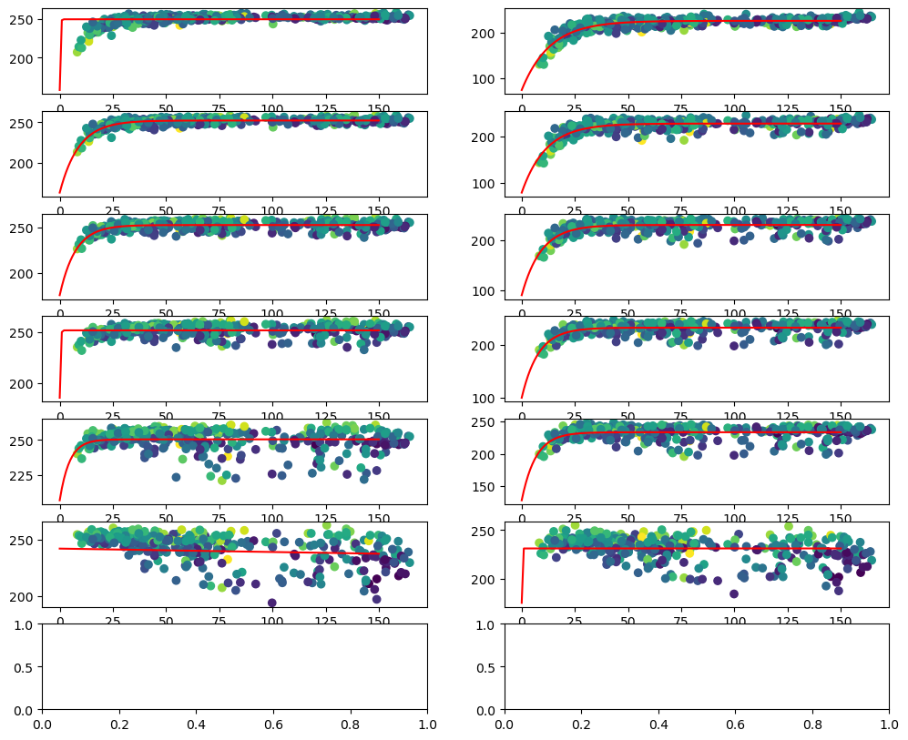
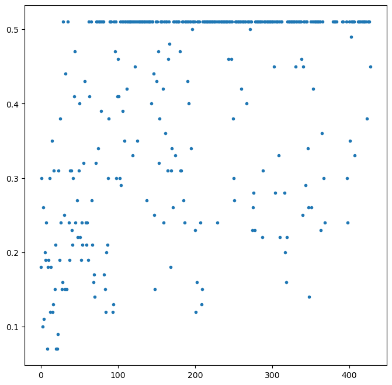

Contents
using Pkg
Pkg.activate("../mpr_atbd_env_jl")
using CSV
using DataFrames
using ZipFile
using Dates
using LsqFit
using ForwardDiff
using StaticArrays
using YAML
#using PythonCall
using PythonPlot
#mpl=pyimport("matplotlib")
#mpl.use("svg")
#plt=pyimport("matplotlib.pyplot")
plt=PythonPlot.pyplot
Activating project at `~/MultiParameter_ATBD/mpr_atbd_env_jl`
Python module: <module 'matplotlib.pyplot' from '/home/huntemann/MultiParameter_ATBD/mpr_atbd_env_jl/.CondaPkg/env/lib/python3.11/site-packages/matplotlib/pyplot.py'>
I(p)=f(x)=p[2]-(p[2]-p[1])*exp(-x/p[3])
Q(p)=f(x)=p[2]-(p[2]-p[1])*exp(-(x/p[3])^p[4])
#reading fit parameters from file
fI(x)=I(pI)(x)
fQ(x)=Q(pQ)(x)
params=YAML.load_file("../../SeaIceThickness_ATBD/book/fit_params.yml")
const tbh_params,tbv_params,pI,pQ=getindex.(Ref(params),["ph","pv","pI","pQ"])
ff(p)=return f(x)=p[2]-(p[2]-p[1])*exp(-x/p[3])
sit_h=ff(tbh_params)
sit_v=ff(tbv_params)
Fw_TB(x,p)=SA[ff(p[1])(x), ff(p[2])(x)]
Fw_IQ(x)=[fI(x[1]), fQ(x[1])]
Fw_TB(x)=Fw_TB(x[1],(tbh_params,tbv_params))
WARNING: redefinition of constant tbh_params. This may fail, cause incorrect answers, or produce other errors.
WARNING: redefinition of constant tbv_params. This may fail, cause incorrect answers, or produce other errors.
WARNING: redefinition of constant pI. This may fail, cause incorrect answers, or produce other errors.
WARNING: redefinition of constant pQ. This may fail, cause incorrect answers, or produce other errors.
Fw_TB (generic function with 2 methods)
function lm_retrieval(Ta,Sₑ,Sₐ,xₐ,F)
#Levenberg Marquardt method after Rodgers (2000)
#target: find x so that F(x)=Ta, given
#Ta: measurement vector
#Sₑ: error covariance of measurement
#Sₐ: error covariance of physical state
#xₐ: expected physical state (also used as start, i.e. first guess)
#F: the forward model translating measument space into state space
Sₐ⁻¹=inv(Sₐ)
Sₑ⁻¹=inv(Sₑ)
#function to minimize with changing input x
J(y,x,Sₑ⁻¹,Sₐ⁻¹,xₐ,F)=(y.-F(x))'*(Sₑ⁻¹*(y.-F(x)))+(xₐ.-x)'*(Sₐ⁻¹*(xₐ.-x))
xᵢ=copy(xₐ)
Jᵢ=J(Ta,xᵢ,Sₑ⁻¹,Sₐ⁻¹,xₐ,F)
γ=1e-5 #set to 0 for gauss newton
for i=1:2000
Kᵢ=ForwardDiff.jacobian(F,xᵢ)
Ŝ⁻¹=Sₐ⁻¹+Kᵢ'*Sₑ⁻¹*Kᵢ #eq 5.13
xᵢ₊₁=xᵢ+((1+γ)*Sₐ⁻¹+Kᵢ'*Sₑ⁻¹*Kᵢ)\(Kᵢ'*Sₑ⁻¹*(Ta-F(xᵢ))-Sₐ⁻¹*(xᵢ-xₐ)) #eq 5.36
Jᵢ₊₁=J(Ta,xᵢ₊₁,Sₑ⁻¹,Sₐ⁻¹,xₐ,F)
d²=(xᵢ-xᵢ₊₁)'*Ŝ⁻¹*(xᵢ-xᵢ₊₁) #eq 5.29
if Jᵢ₊₁<Jᵢ
γ/=2
else
γ*=10
continue
end
xᵢ=xᵢ₊₁
if d²<1e-10
break
end
Jᵢ=Jᵢ₊₁
end
Kᵢ=ForwardDiff.jacobian(F,xᵢ)
Ŝ=inv(Sₐ⁻¹+Kᵢ'*Sₑ⁻¹*Kᵢ) # eq 5.38
return xᵢ,Ŝ
end
retrievallm(h,v)=first.(lm_retrieval(SA[h,v],SA[25 15;15 25.0],SMatrix{1,1,Float64,1}(20000.0),SA[100.],Fw_TB))
retrievallm (generic function with 1 method)
zfn="../data/RRDP_v3.zip"
if !isfile(zfn)
download("https://figshare.com/ndownloader/files/31422043",zfn)
end
zf=ZipFile.Reader(zfn);
idxs=findall(x->(occursin("RRDP_v3/UB_THINICE/S",x)),getfield.(zf.files,:name))
D=DataFrame[]
for idx in idxs
push!(D,CSV.read(read(zf.files[idx]),DataFrame;skipto=3,header=2,missingstring=["-999","noval"]))
# fio,DataFrame;skipto=3,header=2)
end
allD=vcat(D...);
sort!(allD,["date"]);
d=allD.date[1]
datef=dateformat"yyyymmdd"
Dates.format(d,dateformat"yyyymmdd")
for r in eachrow(allD)
cday=Dates.format(r.date,datef)
# println("$(r.latitude) $(r.longitude) 51/55 $cday $cday")
end
rrdp_extract=CSV.read("../data/rrdp_thinice_51-55_724.txt",DataFrame,header=["date","tbh53","tbv53","mean_inc","tbh53_std","tbv53_std"]);
fulltable=hcat(allD,rrdp_extract,makeunique=true);
replace!( x->ismissing(x) ? NaN : x,fulltable[!,"89.0H"]) .|> Float64
replace!( x->ismissing(x) ? NaN : x,fulltable[!,"89.0V"]) .|> Float64
replace!(x->ismissing(x) ? NaN : x,fulltable[!,"SIT"]) .|> Float64
replace!(x->ismissing(x) ? NaN : x,fulltable[!,"sigma_40"]) .|> Float64
fulltable[!,"newSIT"]=retrievallm.(fulltable[!,"tbh53"],fulltable[!,"tbv53"]) .|> first
fulltable[!,"newSIT_std"]=retrievallm.(fulltable[!,"tbh53"],fulltable[!,"tbv53"]) .|> last
iidx=isnan.(fulltable[!,"tbh53"])
#fulltable[iidx,"newSIT"].=NaN
#fulltable[iidx,"newSIT_std"].=NaN
fulltable=fulltable[.!iidx,:]
#iidx=fulltable[!,:SIT].!=-999
#fulltable=fulltable[iidx,:];
369×85 DataFrame
344 rows omitted
| Row | # latitude | longitude | date | reference-id | SIC | SIT | latitude | longitude_1 | time | reference-id_1 | upstreamfile | msl | u10 | v10 | ws | t2m | skt | istl1 | istl2 | istl3 | istl4 | sst | d2m | tcwv | tclw | tciw | ssrd | strd | e | tp | sf | fal | ci | latitude_1 | longitude_2 | time_1 | identification | 6.9H | 6.9V | 7.3H | 7.3V | 10.7H | 10.7V | 18.7H | 18.7V | 23.8H | 23.8V | 36.5H | 36.5V | 89.0H | 89.0V | Earth_Incidence | Earth_Azimuth | scanpos | upstreamfile_1 | timediff | latitude_2 | longitude_3 | time_2 | reference-id_2 | upstreamfile_2 | sigma_40 | sigma_40_mask | nb_samples | warning | std | latitude_3 | longitude_4 | time_3 | reference-id_3 | upstreamfile_3 | SMOS_Tbv | SMOS_Tbh | SMOS_RMSE_v | SMOS_RMSE_h | SMOS_nmp | SMOS_dataloss | date_1 | tbh53 | tbv53 | mean_inc | tbh53_std | tbv53_std | newSIT | newSIT_std |
|---|---|---|---|---|---|---|---|---|---|---|---|---|---|---|---|---|---|---|---|---|---|---|---|---|---|---|---|---|---|---|---|---|---|---|---|---|---|---|---|---|---|---|---|---|---|---|---|---|---|---|---|---|---|---|---|---|---|---|---|---|---|---|---|---|---|---|---|---|---|---|---|---|---|---|---|---|---|---|---|---|---|---|---|---|---|
| Float64 | Float64 | Date | String15 | Int64 | Float64? | Float64 | Float64 | String31 | String15 | String15 | Float64 | Float64 | Float64 | Float64 | Float64 | Float64 | Float64 | Float64 | Float64 | Float64 | Float64 | Float64 | Float64 | Float64 | Float64 | Float64 | Float64 | Float64 | Float64 | Float64 | Float64 | Float64 | Float64 | Float64 | String31 | String31 | Float64 | Float64 | Missing | Missing | Float64 | Float64 | Float64 | Float64 | Float64 | Float64 | Float64 | Float64 | Float64? | Float64? | Float64 | Float64 | Int64 | String | Int64 | Float64 | Float64 | String31 | String31 | String31 | Float64? | Float64? | Int64? | Int64? | Float64? | Float64 | Float64 | String31 | String15 | String31 | Float64? | Float64? | Float64? | Float64? | Int64? | Int64? | Int64 | Float64 | Float64 | Float64 | Float64 | Float64 | Float64 | Float64 | |
| 1 | 79.26 | -168.82 | 2010-10-01 | THINICE_UB | 1 | 0.18 | 79.5 | -168.75 | 2010-10-01T12:00:00Z | NWP_ECMWF | 2010q4.nc | 998.7 | 5.37 | -3.68 | 6.5 | 269.01 | 268.81 | 268.62 | 268.4 | 268.9 | 270.5 | 271.46 | 268.16 | 7.1841 | 0.04279 | 0.119196 | 6.42 | 582.72 | 0.003 | 0.767 | 0.6048 | 0.7336 | 0.9546 | 79.266 | -168.595 | 2010-10-01T13:33:04Z | AMSR_NSIDCWENTZ_REV3 | 207.54 | 240.33 | missing | missing | 215.75 | 244.46 | 230.5 | 251.08 | 237.94 | 254.81 | 245.2 | 257.82 | 255.03 | 260.13 | 55.065 | -115.1 | 35 | AMSR_E_L2A_BrightnessTemperatures_V12_201010011329_D.hdf | 5584 | 79.29 | -168.6 | 2014-06-19T12:00:00Z | ASCAT_CERSAT_IFREMER | ASCAT_20140619.nc | -18.1187 | -18.1187 | 6 | 0 | 0.10281 | 79.317 | -168.808 | 2010-10-01T12:00:00Z | SMOS_UHAM | SMOS_40deg_e12.5_20101001.nc | 216.985 | 188.229 | 4.73857 | 5.60743 | 178 | 37 | 20101001 | 174.4 | 233.8 | 53.2 | 7.9 | 3.0 | 25.1316 | 5.83726 |
| 2 | 79.26 | -168.82 | 2010-10-02 | THINICE_UB | 1 | 0.3 | 79.5 | -168.75 | 2010-10-02T12:00:00Z | NWP_ECMWF | 2010q4.nc | 1009.7 | -0.66 | -1.45 | 1.59 | 262.16 | 262.85 | 262.85 | 265.27 | 268.78 | 270.41 | 271.46 | 259.05 | 4.6032 | 0.00356 | 0.025132 | 11.37 | 485.19 | -0.129 | 0.13 | 0.1095 | 0.7213 | 0.9372 | 79.226 | -168.965 | 2010-10-02T14:15:43Z | AMSR_NSIDCWENTZ_REV3 | 224.15 | 251.44 | missing | missing | 227.24 | 252.39 | 234.14 | 253.93 | 238.56 | 255.44 | 241.8 | 255.62 | 243.56 | 252.67 | 55.085 | -124.4 | 66 | AMSR_E_L2A_BrightnessTemperatures_V12_201010021412_D.hdf | 8143 | 79.29 | -168.6 | 2014-06-20T12:00:00Z | ASCAT_CERSAT_IFREMER | ASCAT_20140620.nc | -18.399 | -18.399 | 9 | 0 | 0.151 | 79.317 | -168.808 | 2010-10-03T12:00:00Z | SMOS_UHAM | SMOS_40deg_e12.5_20101003.nc | 234.626 | 206.705 | 4.65696 | 6.60902 | 162 | 46 | 20101002 | 193.4 | 249.9 | 53.4 | 4.8 | 3.6 | 35.3206 | 14.4309 |
| 3 | 78.777 | 129.225 | 2010-10-02 | THINICE_UB | 1 | 0.1 | 78.75 | 129.0 | 2010-10-02T12:00:00Z | NWP_ECMWF | 2010q4.nc | 1002.3 | -1.98 | -2.58 | 3.25 | 269.18 | 269.45 | 268.09 | 268.89 | 270.31 | 271.01 | 271.46 | 267.57 | 7.8174 | 0.02222 | 0.095501 | 21.09 | 555.76 | -0.062 | 0.381 | 0.3411 | 0.4561 | 0.5614 | 78.794 | 129.306 | 2010-10-02T17:34:21Z | AMSR_NSIDCWENTZ_REV3 | 150.72 | 223.67 | missing | missing | 160.66 | 227.69 | 179.24 | 236.3 | 195.18 | 241.59 | 204.59 | 243.76 | 230.72 | 249.11 | 55.06 | -113.65 | 30 | AMSR_E_L2A_BrightnessTemperatures_V12_201010021730_D.hdf | 20061 | 78.73 | 129.43 | 2014-06-25T12:00:00Z | ASCAT_CERSAT_IFREMER | ASCAT_20140625.nc | -18.1187 | -18.1187 | 9 | 0 | 0.03213 | 78.768 | 129.33 | 2010-10-03T12:00:00Z | SMOS_UHAM | SMOS_40deg_e12.5_20101003.nc | 194.985 | 168.608 | 7.94988 | 7.78475 | 155 | 47 | 20101002 | 143.6 | 210.5 | 53.0 | 10.8 | 6.1 | 13.6045 | 1.87511 |
| 4 | 79.26 | -168.82 | 2010-10-03 | THINICE_UB | 1 | 0.26 | 79.5 | -168.75 | 2010-10-03T12:00:00Z | NWP_ECMWF | 2010q4.nc | 1015.1 | -2.36 | 2.22 | 3.24 | 258.86 | 258.19 | 258.74 | 261.49 | 267.8 | 270.22 | 271.46 | 256.78 | 4.5502 | 0.00095 | 0.009335 | 15.6 | 396.41 | 0.002 | -0.0 | -0.0 | 0.7584 | 0.9898 | 79.239 | -168.777 | 2010-10-03T13:21:01Z | AMSR_NSIDCWENTZ_REV3 | 226.92 | 251.49 | missing | missing | 231.15 | 252.74 | 239.17 | 255.08 | 243.0 | 256.41 | 246.17 | 256.86 | 244.11 | 252.43 | 55.06 | -110.07 | 22 | AMSR_E_L2A_BrightnessTemperatures_V12_201010031316_D.hdf | 4861 | 79.29 | -168.6 | 2014-06-21T12:00:00Z | ASCAT_CERSAT_IFREMER | ASCAT_20140621.nc | -18.5462 | -18.5462 | 6 | 0 | 0.11566 | 79.317 | -168.808 | 2010-10-03T12:00:00Z | SMOS_UHAM | SMOS_40deg_e12.5_20101003.nc | 234.626 | 206.705 | 4.65696 | 6.60902 | 162 | 46 | 20101003 | 189.6 | 249.4 | 53.0 | 4.0 | 3.7 | 32.5825 | 11.3567 |
| 5 | 78.777 | 129.225 | 2010-10-03 | THINICE_UB | 1 | 0.11 | 78.75 | 129.0 | 2010-10-03T12:00:00Z | NWP_ECMWF | 2010q4.nc | 991.8 | -3.46 | 3.16 | 4.69 | 271.8 | 271.29 | 271.06 | 270.56 | 270.25 | 270.96 | 271.46 | 271.15 | 10.2725 | 0.07359 | 0.122274 | 7.51 | 606.18 | 0.066 | 4.286 | 3.4746 | 0.4713 | 0.5829 | 78.805 | 129.093 | 2010-10-03T18:16:55Z | AMSR_NSIDCWENTZ_REV3 | 156.68 | 221.03 | missing | missing | 168.17 | 226.44 | 190.1 | 236.37 | 207.52 | 243.68 | 213.44 | 247.07 | 241.58 | 256.74 | 55.075 | -124.72 | 64 | AMSR_E_L2A_BrightnessTemperatures_V12_201010031813_D.hdf | 22615 | 78.73 | 129.43 | 2014-06-21T12:00:00Z | ASCAT_CERSAT_IFREMER | ASCAT_20140621.nc | -17.8554 | -17.8554 | 9 | 0 | 0.0755 | 78.768 | 129.33 | 2010-10-03T12:00:00Z | SMOS_UHAM | SMOS_40deg_e12.5_20101003.nc | 194.985 | 168.608 | 7.94988 | 7.78475 | 155 | 47 | 20101003 | 145.2 | 206.1 | 53.1 | 3.4 | 5.0 | 13.6471 | 1.88376 |
| 6 | 75.558 | -144.337 | 2010-10-03 | THINICE_UB | 1 | 0.2 | 75.75 | -144.0 | 2010-10-03T12:00:00Z | NWP_ECMWF | 2010q4.nc | 1013.4 | -1.04 | -4.54 | 4.66 | 261.1 | 264.26 | 260.99 | 263.89 | 269.53 | 270.93 | 271.46 | 258.88 | 3.265 | 0.00286 | 0.019182 | 8.83 | 448.72 | -0.32 | 0.143 | 0.1202 | 0.5199 | 0.6517 | 75.539 | -144.263 | 2010-10-03T11:42:54Z | AMSR_NSIDCWENTZ_REV3 | 192.73 | 249.96 | missing | missing | 203.59 | 249.61 | 219.58 | 251.31 | 225.72 | 252.76 | 230.08 | 253.69 | 237.22 | 254.77 | 55.045 | -117.81 | 35 | AMSR_E_L2A_BrightnessTemperatures_V12_201010031137_D.hdf | -1026 | 75.51 | -144.35 | 2014-06-26T12:00:00Z | ASCAT_CERSAT_IFREMER | ASCAT_20140626.nc | -17.2595 | -17.2595 | 12 | 0 | 0.09478 | 75.531 | -144.152 | 2010-10-03T12:00:00Z | SMOS_UHAM | SMOS_40deg_e12.5_20101003.nc | 227.4 | 193.32 | 7.50068 | 8.1402 | 74 | 53 | 20101003 | 164.8 | 247.0 | 54.8 | 0.0 | 0.0 | 21.0208 | 3.97552 |
| 7 | 75.558 | -144.337 | 2010-10-04 | THINICE_UB | 1 | 0.19 | 75.75 | -144.0 | 2010-10-04T12:00:00Z | NWP_ECMWF | 2010q4.nc | 1020.3 | -3.75 | 2.22 | 4.35 | 263.09 | 264.68 | 261.35 | 262.93 | 268.32 | 270.6 | 271.46 | 260.64 | 3.2014 | 0.00512 | 0.024003 | 7.77 | 470.17 | -0.211 | 0.23 | 0.1857 | 0.5172 | 0.6479 | 75.533 | -144.335 | 2010-10-04T12:25:23Z | AMSR_NSIDCWENTZ_REV3 | 197.26 | 251.94 | missing | missing | 210.2 | 252.19 | 223.53 | 253.9 | 228.15 | 254.87 | 233.31 | 255.88 | 241.09 | 256.26 | 55.065 | -133.23 | 76 | AMSR_E_L2A_BrightnessTemperatures_V12_201010041221_D.hdf | 1523 | 75.51 | -144.35 | 2014-06-22T12:00:00Z | ASCAT_CERSAT_IFREMER | ASCAT_20140622.nc | -16.4492 | -16.4492 | 15 | 0 | 0.3004 | 75.531 | -144.152 | 2010-10-05T12:00:00Z | SMOS_UHAM | SMOS_40deg_e12.5_20101005.nc | 227.876 | 193.866 | 6.46533 | 6.02972 | 80 | 57 | 20101004 | 178.2 | 253.0 | 52.7 | 3.2 | 3.4 | 25.9447 | 6.28661 |
| 8 | 79.26 | -168.82 | 2010-10-04 | THINICE_UB | 1 | 0.24 | 79.5 | -168.75 | 2010-10-04T12:00:00Z | NWP_ECMWF | 2010q4.nc | 1017.2 | 2.29 | 4.22 | 4.8 | 263.5 | 262.72 | 262.14 | 262.42 | 266.7 | 269.86 | 271.46 | 262.14 | 5.8883 | 0.00816 | 0.049546 | 9.72 | 500.06 | 0.012 | 0.104 | 0.0875 | 0.7205 | 0.9361 | 79.229 | -168.946 | 2010-10-04T14:03:32Z | AMSR_NSIDCWENTZ_REV3 | 225.56 | 250.47 | missing | missing | 228.65 | 252.64 | 239.52 | 255.66 | 243.96 | 257.59 | 247.93 | 258.37 | 246.91 | 253.64 | 55.075 | -122.37 | 58 | AMSR_E_L2A_BrightnessTemperatures_V12_201010041359_D.hdf | 7412 | 79.29 | -168.6 | 2014-06-26T12:00:00Z | ASCAT_CERSAT_IFREMER | ASCAT_20140626.nc | -16.5426 | -16.5426 | 9 | 0 | 0.06426 | 79.317 | -168.808 | 2010-10-05T12:00:00Z | SMOS_UHAM | SMOS_40deg_e12.5_20101005.nc | 234.001 | 207.888 | 4.98424 | 6.17568 | 135 | 51 | 20101004 | 185.4 | 244.3 | 53.0 | 2.4 | 3.2 | 30.5382 | 9.48508 |
| 9 | 78.777 | 129.225 | 2010-10-04 | THINICE_UB | 1 | 0.07 | 78.75 | 129.0 | 2010-10-04T12:00:00Z | NWP_ECMWF | 2010q4.nc | 993.3 | -4.83 | 3.08 | 5.73 | 271.97 | 270.98 | 270.73 | 270.93 | 270.52 | 270.97 | 271.46 | 270.61 | 10.3122 | 0.01146 | 0.076113 | 14.3 | 578.09 | 0.032 | 0.676 | 0.4632 | 0.4714 | 0.5831 | 78.757 | 129.338 | 2010-10-04T17:22:19Z | AMSR_NSIDCWENTZ_REV3 | 130.79 | 207.23 | missing | missing | 142.92 | 213.64 | 168.7 | 226.17 | 190.42 | 235.52 | 199.9 | 240.12 | 236.81 | 254.35 | 55.06 | -107.77 | 16 | AMSR_E_L2A_BrightnessTemperatures_V12_201010041717_D.hdf | 19339 | 78.73 | 129.43 | 2014-06-26T12:00:00Z | ASCAT_CERSAT_IFREMER | ASCAT_20140626.nc | -19.1908 | -19.1908 | 6 | 0 | 0.13333 | 78.768 | 129.33 | 2010-10-05T12:00:00Z | SMOS_UHAM | SMOS_40deg_e12.5_20101005.nc | 207.249 | 175.371 | 7.98493 | 6.81444 | 126 | 56 | 20101004 | 122.6 | 192.3 | 53.5 | 5.1 | 4.5 | 8.23944 | 1.01562 |
| 10 | 75.558 | -144.337 | 2010-10-05 | THINICE_UB | 1 | 0.18 | 75.75 | -144.0 | 2010-10-05T12:00:00Z | NWP_ECMWF | 2010q4.nc | 1018.5 | -2.19 | -0.89 | 2.37 | 261.91 | 262.04 | 260.59 | 262.67 | 267.5 | 270.22 | 271.46 | 260.07 | 3.5221 | 0.00425 | 0.021439 | 6.32 | 462.91 | -0.077 | 0.121 | 0.0975 | 0.6449 | 0.829 | 75.597 | -144.349 | 2010-10-05T11:30:55Z | AMSR_NSIDCWENTZ_REV3 | 202.81 | 252.59 | missing | missing | 214.93 | 252.94 | 225.73 | 254.48 | 230.56 | 255.86 | 235.73 | 256.7 | 241.75 | 257.36 | 55.045 | -109.5 | 17 | AMSR_E_L2A_BrightnessTemperatures_V12_201010051125_D.hdf | -1745 | 75.51 | -144.35 | 2014-06-23T12:00:00Z | ASCAT_CERSAT_IFREMER | ASCAT_20140623.nc | -16.8355 | -16.8355 | 15 | 0 | 0.12851 | 75.531 | -144.152 | 2010-10-05T12:00:00Z | SMOS_UHAM | SMOS_40deg_e12.5_20101005.nc | 227.876 | 193.866 | 6.46533 | 6.02972 | 80 | 57 | 20101005 | 179.9 | 239.0 | 51.8 | 1.3 | 4.2 | 27.7638 | 7.40889 |
| 11 | 78.899 | -170.305 | 2010-10-06 | THINICE_UB | 1 | 0.3 | 78.75 | -170.25 | 2010-10-06T12:00:00Z | NWP_ECMWF | 2010q4.nc | 1012.3 | 5.87 | -2.59 | 6.42 | 268.22 | 267.84 | 267.61 | 267.18 | 267.52 | 269.82 | 271.46 | 267.32 | 7.1443 | 0.04773 | 0.105041 | 4.46 | 568.68 | 0.019 | 0.797 | 0.6413 | 0.7466 | 0.973 | 78.923 | -170.141 | 2010-10-06T13:51:30Z | AMSR_NSIDCWENTZ_REV3 | 225.22 | 251.43 | missing | missing | 227.56 | 252.99 | 232.43 | 256.68 | 238.93 | 258.92 | 243.87 | 259.85 | 245.9 | 256.51 | 55.065 | -119.57 | 47 | AMSR_E_L2A_BrightnessTemperatures_V12_201010061347_D.hdf | 6690 | 78.93 | -170.26 | 2014-06-29T12:00:00Z | ASCAT_CERSAT_IFREMER | ASCAT_20140629.nc | -15.1768 | -15.1768 | 3 | 0 | 0.10442 | 78.915 | -170.395 | 2010-10-06T12:00:00Z | SMOS_UHAM | SMOS_40deg_e12.5_20101006.nc | 236.571 | 215.353 | 4.97496 | 5.44048 | 177 | 38 | 20101006 | 202.1 | 245.1 | 53.2 | 4.6 | 3.1 | 46.6126 | 38.5753 |
| 12 | 80.591 | 130.632 | 2010-10-06 | THINICE_UB | 1 | 0.12 | 80.25 | 130.5 | 2010-10-06T12:00:00Z | NWP_ECMWF | 2010q4.nc | 1010.2 | 1.04 | -0.1 | 1.05 | 268.79 | 268.9 | 268.12 | 269.19 | 270.36 | 270.97 | 271.46 | 267.59 | 5.475 | 0.0112 | 0.024414 | 16.53 | 561.49 | -0.035 | 0.121 | 0.0762 | 0.5675 | 0.7193 | 80.625 | 130.571 | 2010-10-06T18:47:05Z | AMSR_NSIDCWENTZ_REV3 | 167.47 | 232.95 | missing | missing | 178.86 | 238.99 | 201.35 | 247.82 | 212.73 | 251.83 | 223.94 | 254.84 | 238.92 | 254.21 | 55.105 | -122.23 | 74 | AMSR_E_L2A_BrightnessTemperatures_V12_201010061844_D.hdf | 24425 | 80.58 | 130.44 | 2014-06-29T12:00:00Z | ASCAT_CERSAT_IFREMER | ASCAT_20140629.nc | -16.4492 | -16.4492 | 6 | 0 | 0.1012 | 80.624 | 130.638 | 2010-10-06T12:00:00Z | SMOS_UHAM | SMOS_40deg_e12.5_20101006.nc | 199.244 | 165.614 | 9.73051 | 8.17281 | 65 | 69 | 20101006 | 154.2 | 222.6 | 52.3 | 2.5 | 1.6 | 17.1362 | 2.71314 |
| 13 | 75.661 | -148.733 | 2010-10-06 | THINICE_UB | 1 | 0.18 | 75.75 | -148.5 | 2010-10-06T12:00:00Z | NWP_ECMWF | 2010q4.nc | 1013.4 | 3.32 | 2.77 | 4.33 | 262.92 | 262.26 | 261.38 | 262.56 | 266.86 | 269.84 | 271.46 | 261.1 | 5.2206 | 0.0059 | 0.033646 | 7.02 | 467.34 | -0.035 | -0.0 | -0.0 | 0.6917 | 0.8952 | 75.66 | -148.71 | 2010-10-06T12:13:30Z | AMSR_NSIDCWENTZ_REV3 | 189.35 | 248.05 | missing | missing | 198.15 | 246.84 | 214.94 | 248.96 | 222.62 | 251.27 | 228.63 | 252.74 | 241.5 | 254.34 | 55.045 | -123.48 | 49 | AMSR_E_L2A_BrightnessTemperatures_V12_201010061208_D.hdf | 810 | 75.64 | -148.64 | 2014-06-29T12:00:00Z | ASCAT_CERSAT_IFREMER | ASCAT_20140629.nc | -14.3053 | -14.3053 | 12 | 0 | 0.11406 | 75.622 | -148.729 | 2010-10-06T12:00:00Z | SMOS_UHAM | SMOS_40deg_e12.5_20101006.nc | 219.965 | 188.397 | 6.20162 | 7.47495 | 96 | 51 | 20101006 | 166.9 | 251.6 | 52.9 | 4.6 | 5.6 | 21.7052 | 4.24329 |
| ⋮ | ⋮ | ⋮ | ⋮ | ⋮ | ⋮ | ⋮ | ⋮ | ⋮ | ⋮ | ⋮ | ⋮ | ⋮ | ⋮ | ⋮ | ⋮ | ⋮ | ⋮ | ⋮ | ⋮ | ⋮ | ⋮ | ⋮ | ⋮ | ⋮ | ⋮ | ⋮ | ⋮ | ⋮ | ⋮ | ⋮ | ⋮ | ⋮ | ⋮ | ⋮ | ⋮ | ⋮ | ⋮ | ⋮ | ⋮ | ⋮ | ⋮ | ⋮ | ⋮ | ⋮ | ⋮ | ⋮ | ⋮ | ⋮ | ⋮ | ⋮ | ⋮ | ⋮ | ⋮ | ⋮ | ⋮ | ⋮ | ⋮ | ⋮ | ⋮ | ⋮ | ⋮ | ⋮ | ⋮ | ⋮ | ⋮ | ⋮ | ⋮ | ⋮ | ⋮ | ⋮ | ⋮ | ⋮ | ⋮ | ⋮ | ⋮ | ⋮ | ⋮ | ⋮ | ⋮ | ⋮ | ⋮ | ⋮ | ⋮ | ⋮ | ⋮ |
| 358 | 77.685 | 79.739 | 2010-12-11 | THINICE_UB | 1 | 0.51 | 78.0 | 79.5 | 2010-12-11T12:00:00Z | NWP_ECMWF | 2010q4.nc | 1031.1 | -0.32 | 7.09 | 7.1 | 251.17 | 252.12 | 251.1 | 252.54 | 256.88 | 264.87 | 271.46 | 248.42 | 2.7854 | 0.00069 | 0.0358 | 0.0 | 414.61 | -0.107 | 0.221 | 0.2152 | 0.7212 | 0.937 | 77.675 | 79.815 | 2010-12-11T06:57:06Z | AMSR_NSIDCWENTZ_REV3 | 228.61 | 250.47 | missing | missing | 232.19 | 250.51 | 237.06 | 250.57 | 238.87 | 251.12 | 239.24 | 249.43 | 232.25 | 240.84 | 55.22 | 9.29 | 71 | AMSR_E_L2A_BrightnessTemperatures_V12_201012110610_A.hdf | -18174 | 77.61 | 79.79 | 2014-09-02T12:00:00Z | ASCAT_CERSAT_IFREMER | ASCAT_20140902.nc | -16.0945 | missing | 12 | 0 | 0.24096 | 77.637 | 79.811 | 2010-12-11T12:00:00Z | SMOS_UHAM | SMOS_40deg_e12.5_20101211.nc | 244.186 | 229.14 | 5.581 | 5.67327 | 154 | 38 | 20101211 | 214.7 | 249.7 | 53.2 | 3.6 | 2.3 | 74.1313 | 442.164 |
| 359 | 79.049 | 73.44 | 2010-12-11 | THINICE_UB | 1 | 0.51 | 78.75 | 73.5 | 2010-12-11T12:00:00Z | NWP_ECMWF | 2010q4.nc | 1028.0 | -2.16 | 6.99 | 7.32 | 254.2 | 255.09 | 253.87 | 254.49 | 258.23 | 265.5 | 271.46 | 251.6 | 2.9868 | 0.00217 | 0.070779 | 0.0 | 445.14 | -0.115 | 0.295 | 0.2864 | 0.7142 | 0.9271 | 79.048 | 73.544 | 2010-12-11T06:57:30Z | AMSR_NSIDCWENTZ_REV3 | 228.98 | 252.03 | missing | missing | 232.13 | 251.63 | 236.3 | 252.04 | 237.89 | 252.47 | 238.29 | 250.88 | 231.37 | 240.76 | 55.225 | -1.59 | 79 | AMSR_E_L2A_BrightnessTemperatures_V12_201012110610_A.hdf | -18150 | 79.05 | 73.58 | 2014-09-02T12:00:00Z | ASCAT_CERSAT_IFREMER | ASCAT_20140902.nc | -14.4196 | missing | 3 | 0 | 0.4 | 79.075 | 73.61 | 2010-12-11T12:00:00Z | SMOS_UHAM | SMOS_40deg_e12.5_20101211.nc | 247.752 | 236.918 | 5.23794 | 7.02031 | 156 | 47 | 20101211 | 223.1 | 250.3 | 52.6 | 3.0 | 3.5 | 140.767 | 18395.0 |
| 360 | 79.793 | 64.21 | 2010-12-11 | THINICE_UB | 1 | 0.51 | 79.5 | 64.5 | 2010-12-11T12:00:00Z | NWP_ECMWF | 2010q4.nc | 1024.6 | -5.09 | 3.5 | 6.18 | 255.82 | 255.5 | 254.75 | 255.24 | 259.51 | 266.06 | 271.46 | 253.85 | 2.4568 | 0.0013 | 0.051289 | 0.0 | 422.21 | -0.012 | 0.104 | 0.1013 | 0.7304 | 0.9501 | 79.788 | 64.445 | 2010-12-11T08:37:01Z | AMSR_NSIDCWENTZ_REV3 | 231.93 | 252.7 | missing | missing | 232.93 | 252.39 | 235.07 | 252.69 | 236.67 | 252.97 | 237.55 | 250.87 | 231.09 | 239.95 | 55.16 | 43.8 | 31 | AMSR_E_L2A_BrightnessTemperatures_V12_201012110749_A.hdf | -12179 | 79.8 | 64.45 | 2014-09-02T12:00:00Z | ASCAT_CERSAT_IFREMER | ASCAT_20140902.nc | -13.2138 | -13.2138 | 6 | 0 | 0.08193 | 79.749 | 64.415 | 2010-12-11T12:00:00Z | SMOS_UHAM | SMOS_40deg_e12.5_20101211.nc | 248.782 | 236.466 | 5.26423 | 4.68716 | 170 | 40 | 20101211 | 223.4 | 250.5 | 53.0 | 4.5 | 3.4 | 141.383 | 18479.0 |
| 361 | 75.058 | -69.258 | 2010-12-11 | THINICE_UB | 1 | 0.51 | 75.0 | -69.0 | 2010-12-11T12:00:00Z | NWP_ECMWF | 2010q4.nc | 997.3 | -2.61 | 1.35 | 2.93 | 260.09 | 259.43 | 258.44 | 259.09 | 261.06 | 266.97 | 271.46 | 258.63 | 4.1328 | 0.00425 | 0.032723 | 0.0 | 490.39 | 0.012 | 0.438 | 0.3908 | 0.7045 | 0.9134 | 75.046 | -69.178 | 2010-12-11T11:58:05Z | AMSR_NSIDCWENTZ_REV3 | 216.25 | 248.07 | missing | missing | 214.27 | 247.82 | 216.98 | 247.43 | 221.53 | 247.59 | 222.49 | 244.34 | 223.84 | 236.72 | 55.205 | -156.33 | 221 | AMSR_E_L2A_BrightnessTemperatures_V12_201012111156_D.hdf | -115 | 75.07 | -69.29 | 2014-09-02T12:00:00Z | ASCAT_CERSAT_IFREMER | ASCAT_20140902.nc | -18.5462 | missing | 15 | 0 | 0.4 | 75.041 | -69.117 | 2010-12-11T12:00:00Z | SMOS_UHAM | SMOS_40deg_e12.5_20101211.nc | 241.046 | 220.862 | 6.86945 | 8.92203 | 69 | 51 | 20101211 | 211.2 | 243.5 | 51.8 | 1.0 | 1.3 | 72.808 | 392.919 |
| 362 | 73.888 | -70.579 | 2010-12-11 | THINICE_UB | 1 | 0.33 | 74.25 | -70.5 | 2010-12-11T12:00:00Z | NWP_ECMWF | 2010q4.nc | 996.7 | -1.44 | 2.71 | 3.07 | 256.83 | 256.1 | 255.48 | 257.23 | 260.48 | 266.71 | 271.46 | 255.07 | 3.3405 | 0.00113 | 0.022362 | 0.0 | 452.75 | -0.009 | 0.225 | 0.2008 | 0.7227 | 0.9392 | 73.89 | -70.463 | 2010-12-11T13:35:22Z | AMSR_NSIDCWENTZ_REV3 | 228.28 | 255.71 | missing | missing | 221.97 | 254.31 | 214.16 | 248.91 | 215.35 | 245.45 | 214.75 | 235.5 | 210.05 | 217.06 | 55.22 | -138.34 | 229 | AMSR_E_L2A_BrightnessTemperatures_V12_201012111245_A.hdf | 5722 | 73.92 | -70.56 | 2014-09-02T12:00:00Z | ASCAT_CERSAT_IFREMER | ASCAT_20140902.nc | -17.4882 | missing | 12 | 0 | 0.4 | 73.874 | -70.682 | 2010-12-11T12:00:00Z | SMOS_UHAM | SMOS_40deg_e12.5_20101211.nc | 249.862 | 235.231 | 6.56982 | 5.29858 | 66 | 54 | 20101211 | 224.1 | 257.6 | 51.6 | 1.4 | 0.9 | 122.341 | 13355.2 |
| 363 | 73.338 | 62.906 | 2010-12-12 | THINICE_UB | 1 | 0.51 | 73.5 | 63.0 | 2010-12-12T12:00:00Z | NWP_ECMWF | 2010q4.nc | 994.2 | 4.0 | 9.43 | 10.24 | 266.03 | 264.65 | 263.61 | 262.13 | 262.86 | 267.55 | 271.46 | 263.56 | 3.946 | 0.00538 | 0.023901 | 0.0 | 502.84 | 0.041 | 3.891 | 3.2493 | 0.7058 | 0.9152 | 73.322 | 62.796 | 2010-12-12T07:39:10Z | AMSR_NSIDCWENTZ_REV3 | 221.54 | 250.52 | missing | missing | 226.93 | 252.54 | 236.21 | 255.77 | 240.55 | 257.65 | 244.9 | 258.67 | 250.3 | 258.35 | 55.285 | -23.13 | 113 | AMSR_E_L2A_BrightnessTemperatures_V12_201012120653_A.hdf | -15650 | 73.32 | 62.81 | 2014-09-03T12:00:00Z | ASCAT_CERSAT_IFREMER | ASCAT_20140903.nc | -19.3681 | missing | 12 | 0 | 0.4 | 73.294 | 63.004 | 2010-12-13T12:00:00Z | SMOS_UHAM | SMOS_40deg_e12.5_20101213.nc | 239.691 | 222.777 | 4.62395 | 5.79137 | 89 | 31 | 20101212 | 210.9 | 246.0 | 53.4 | 4.7 | 3.7 | 65.869 | 211.446 |
| 364 | 74.454 | 64.511 | 2010-12-12 | THINICE_UB | 1 | 0.51 | 74.25 | 64.5 | 2010-12-12T12:00:00Z | NWP_ECMWF | 2010q4.nc | 993.8 | 3.59 | 8.85 | 9.55 | 265.3 | 263.32 | 262.15 | 259.64 | 262.13 | 267.38 | 271.46 | 263.21 | 3.7274 | 0.00443 | 0.018156 | 0.0 | 492.23 | -0.018 | 4.654 | 4.036 | 0.7238 | 0.9408 | 74.445 | 64.654 | 2010-12-12T07:39:25Z | AMSR_NSIDCWENTZ_REV3 | 235.27 | 255.0 | missing | missing | 237.85 | 254.78 | 241.73 | 255.62 | 244.3 | 256.28 | 245.46 | 255.83 | 248.09 | 253.96 | 55.275 | -13.85 | 101 | AMSR_E_L2A_BrightnessTemperatures_V12_201012120653_A.hdf | -15635 | 74.47 | 64.63 | 2014-09-03T12:00:00Z | ASCAT_CERSAT_IFREMER | ASCAT_20140903.nc | -19.1908 | missing | 12 | 0 | 0.28755 | 74.507 | 64.456 | 2010-12-13T12:00:00Z | SMOS_UHAM | SMOS_40deg_e12.5_20101213.nc | 247.348 | 236.618 | 5.45154 | 5.03155 | 104 | 28 | 20101212 | 215.8 | 250.0 | 53.0 | 2.1 | 4.3 | 79.5799 | 717.724 |
| 365 | 75.418 | 67.474 | 2010-12-12 | THINICE_UB | 1 | 0.51 | 75.75 | 67.5 | 2010-12-12T12:00:00Z | NWP_ECMWF | 2010q4.nc | 997.0 | -6.11 | 9.48 | 11.28 | 259.42 | 258.81 | 257.6 | 256.16 | 260.84 | 266.84 | 271.46 | 257.37 | 4.5237 | 0.0322 | 0.175512 | 0.0 | 467.52 | -0.207 | 4.827 | 4.4778 | 0.7267 | 0.9449 | 75.43 | 67.554 | 2010-12-12T07:39:40Z | AMSR_NSIDCWENTZ_REV3 | 236.45 | 255.35 | missing | missing | 238.9 | 255.08 | 241.91 | 255.5 | 244.03 | 256.08 | 243.65 | 254.64 | 240.77 | 249.14 | 55.26 | -2.32 | 87 | AMSR_E_L2A_BrightnessTemperatures_V12_201012120653_A.hdf | -15620 | 75.4 | 67.42 | 2014-09-03T12:00:00Z | ASCAT_CERSAT_IFREMER | ASCAT_20140903.nc | -16.638 | missing | 12 | 0 | 0.4 | 75.378 | 67.668 | 2010-12-13T12:00:00Z | SMOS_UHAM | SMOS_40deg_e12.5_20101213.nc | 248.284 | 236.162 | 4.98069 | 5.51113 | 146 | 25 | 20101212 | 231.0 | 254.8 | 53.3 | 3.5 | 3.4 | 152.974 | 19465.7 |
| 366 | 79.452 | 61.992 | 2010-12-12 | THINICE_UB | 1 | 0.51 | 79.5 | 62.25 | 2010-12-12T12:00:00Z | NWP_ECMWF | 2010q4.nc | 1005.5 | -14.19 | 4.01 | 14.75 | 254.53 | 255.42 | 254.66 | 255.93 | 260.17 | 266.33 | 271.46 | 251.1 | 4.1607 | 0.00174 | 0.251113 | 0.0 | 425.02 | -0.208 | 0.966 | 0.9604 | 0.7235 | 0.9404 | 79.472 | 61.971 | 2010-12-12T07:40:54Z | AMSR_NSIDCWENTZ_REV3 | 230.04 | 251.3 | missing | missing | 232.57 | 251.75 | 235.38 | 252.65 | 237.35 | 253.47 | 237.78 | 252.16 | 234.51 | 245.31 | 55.225 | -1.66 | 78 | AMSR_E_L2A_BrightnessTemperatures_V12_201012120653_A.hdf | -15546 | 79.47 | 61.84 | 2014-09-03T12:00:00Z | ASCAT_CERSAT_IFREMER | ASCAT_20140903.nc | -15.3169 | missing | 9 | 0 | 0.20723 | 79.395 | 61.945 | 2010-12-13T12:00:00Z | SMOS_UHAM | SMOS_40deg_e12.5_20101213.nc | 242.401 | 225.75 | 4.91261 | 4.9291 | 208 | 28 | 20101212 | 219.1 | 249.5 | 53.0 | 4.6 | 5.7 | 119.662 | 12192.3 |
| 367 | 79.398 | 54.761 | 2010-12-12 | THINICE_UB | 1 | 0.51 | 79.5 | 54.75 | 2010-12-12T12:00:00Z | NWP_ECMWF | 2010q4.nc | 1003.8 | -13.98 | -2.25 | 14.16 | 254.97 | 256.4 | 255.15 | 256.76 | 261.83 | 267.24 | 271.46 | 251.65 | 3.901 | 0.00069 | 0.207004 | 0.0 | 422.54 | -0.259 | 0.563 | 0.5607 | 0.6996 | 0.9065 | 79.366 | 54.861 | 2010-12-12T09:20:13Z | AMSR_NSIDCWENTZ_REV3 | 230.63 | 253.58 | missing | missing | 233.19 | 254.05 | 236.21 | 254.76 | 238.01 | 255.29 | 238.27 | 254.57 | 232.96 | 246.91 | 55.155 | 46.82 | 28 | AMSR_E_L2A_BrightnessTemperatures_V12_201012120832_A.hdf | -9587 | 79.43 | 54.71 | 2014-09-03T12:00:00Z | ASCAT_CERSAT_IFREMER | ASCAT_20140903.nc | -18.2566 | missing | 3 | 0 | 0.4 | 79.38 | 54.884 | 2010-12-13T12:00:00Z | SMOS_UHAM | SMOS_40deg_e12.5_20101213.nc | 244.34 | 227.793 | 4.63171 | 4.76411 | 200 | 32 | 20101212 | 217.4 | 246.1 | 53.1 | 4.9 | 2.7 | 122.625 | 13473.4 |
| 368 | 72.217 | -69.522 | 2010-12-12 | THINICE_UB | 1 | NaN | 72.0 | -69.75 | 2010-12-12T12:00:00Z | NWP_ECMWF | 2010q4.nc | 1013.9 | -0.68 | 1.71 | 1.84 | 250.98 | 249.68 | 249.05 | 252.68 | 260.49 | 266.73 | 271.46 | 248.62 | 1.9653 | 0.0 | 0.006668 | 0.0 | 296.65 | -0.048 | -0.0 | -0.0 | 0.7214 | 0.9373 | 72.244 | -69.516 | 2010-12-12T14:17:39Z | AMSR_NSIDCWENTZ_REV3 | 232.59 | 254.34 | missing | missing | 227.92 | 252.77 | 225.69 | 250.16 | 224.29 | 248.08 | 220.46 | 240.35 | 196.25 | 206.19 | 55.225 | -128.1 | 231 | AMSR_E_L2A_BrightnessTemperatures_V12_201012121329_A.hdf | 8259 | 72.19 | -69.5 | 2014-09-03T12:00:00Z | ASCAT_CERSAT_IFREMER | ASCAT_20140903.nc | -18.5462 | missing | 12 | 0 | 0.4 | 72.181 | -69.507 | 2010-12-13T12:00:00Z | SMOS_UHAM | SMOS_40deg_e12.5_20101213.nc | 251.974 | 238.134 | 5.53016 | 5.86379 | 40 | 71 | 20101212 | 223.9 | 247.2 | 53.7 | 0.7 | 1.6 | 148.032 | 19159.9 |
| 369 | 72.552 | -65.645 | 2010-12-12 | THINICE_UB | 1 | 0.38 | 72.75 | -66.0 | 2010-12-12T12:00:00Z | NWP_ECMWF | 2010q4.nc | 1014.5 | 0.43 | 0.78 | 0.89 | 254.31 | 252.76 | 250.81 | 254.29 | 261.33 | 267.06 | 271.46 | 252.01 | 1.96 | 0.00026 | 0.009437 | 0.0 | 311.03 | -0.107 | -0.0 | -0.0 | 0.678 | 0.8758 | 72.579 | -65.613 | 2010-12-12T14:16:58Z | AMSR_NSIDCWENTZ_REV3 | 220.1 | 249.44 | missing | missing | 215.81 | 247.95 | 221.05 | 246.94 | 222.75 | 246.35 | 224.5 | 243.23 | 219.01 | 230.59 | 55.245 | -110.04 | 208 | AMSR_E_L2A_BrightnessTemperatures_V12_201012121329_A.hdf | 8218 | 72.56 | -65.57 | 2014-09-03T12:00:00Z | ASCAT_CERSAT_IFREMER | ASCAT_20140903.nc | -18.6986 | missing | 9 | 0 | 0.4 | 72.524 | -65.495 | 2010-12-13T12:00:00Z | SMOS_UHAM | SMOS_40deg_e12.5_20101213.nc | 246.406 | 229.768 | 4.89569 | 5.0534 | 34 | 75 | 20101212 | 217.2 | 258.5 | 52.5 | 1.9 | 4.4 | 66.0185 | 214.285 |
retrievallm.(fulltable[!,"tbh53"],fulltable[!,"tbv53"])
369-element Vector{Tuple{Float64, Float64}}:
(25.131569987490654, 5.837255750344498)
(35.32063441859541, 14.43089361074618)
(13.604509041095065, 1.8751062019217744)
(32.582541365234626, 11.356693961911255)
(13.647115240523785, 1.883760350356335)
(21.020832938427922, 3.9755249623557023)
(25.94467097409818, 6.286609938012284)
(30.538245781899626, 9.485076006306745)
(8.23943701365431, 1.0156210415123341)
(27.76377046900532, 7.408887053520825)
⋮
(72.80800274055952, 392.9190176843671)
(122.3408657801763, 13355.161690257875)
(65.86902043198144, 211.44633866286003)
(79.57988025826218, 717.7242177753683)
(152.9738921295843, 19465.705341145338)
(119.66247184290643, 12192.272624278146)
(122.62483064899938, 13473.401498832827)
(148.0323764558634, 19159.909891855124)
(66.01849462146932, 214.28523773241497)
fulltable[!,"tbh53"]
369-element Vector{Float64}:
174.4
193.4
143.6
189.6
145.2
164.8
178.2
185.4
122.6
179.9
⋮
211.2
224.1
210.9
215.8
231.0
219.1
217.4
223.9
217.2
print(names(fulltable))
["# latitude", "longitude", "date", "reference-id", "SIC", "SIT", "latitude", "longitude_1", "time", "reference-id_1", "upstreamfile", "msl", "u10", "v10", "ws", "t2m", "skt", "istl1", "istl2", "istl3", "istl4", "sst", "d2m", "tcwv", "tclw", "tciw", "ssrd", "strd", "e", "tp", "sf", "fal", "ci", "latitude_1", "longitude_2", "time_1", "identification", "6.9H", "6.9V", "7.3H", "7.3V", "10.7H", "10.7V", "18.7H", "18.7V", "23.8H", "23.8V", "36.5H", "36.5V", "89.0H", "89.0V", "Earth_Incidence", "Earth_Azimuth", "scanpos", "upstreamfile_1", "timediff", "latitude_2", "longitude_3", "time_2", "reference-id_2", "upstreamfile_2", "sigma_40", "sigma_40_mask", "nb_samples", "warning", "std", "latitude_3", "longitude_4", "time_3", "reference-id_3", "upstreamfile_3", "SMOS_Tbv", "SMOS_Tbh", "SMOS_RMSE_v", "SMOS_RMSE_h", "SMOS_nmp", "SMOS_dataloss", "date_1", "tbh53", "tbv53", "mean_inc", "tbh53_std", "tbv53_std"]
include("../algorithm/src/OEM_with_SIT.jl")
using .OEM
WARNING: replacing module OEM.
WARNING: using OEM.lm_retrieval in module Main conflicts with an existing identifier.
fig,axs=plt.subplots(nrows=7,ncols=2,figsize=(12,10))
#scatter(fulltable[!,:SIT],fulltable[!,"10.7H"])
channels=["6.9V","6.9H","10.7V","10.7H","18.7V","18.7H","23.8V","23.8H","36.5V","36.5H","89.0V","89.0H"]
owtp=[157.9397756705356
74.22054192317813
163.4896743050617
78.40477088765373
175.18191921420814
90.60124656474672
185.91398347505353
99.89685544430296
206.667948239106
128.36037504633393
242.01900700540162
175.158277073163]
for i=1:12
nanidx=.!isnan.(fulltable[!,channels[i]])
axs.flat[i-1].scatter(fulltable[nanidx,:newSIT],fulltable[nanidx,channels[i]],c=fulltable[nanidx,:strd],cmap="viridis")
cf(x,pp)=ff([owtp[i],pp[1],pp[2]]).(x)
hp=curve_fit(cf,fulltable[nanidx,:newSIT],fulltable[nanidx,channels[i]],[200,2.0]).param
hp=[owtp[i],hp...]
#println(hp[3])
#axs[p].scatter(fulltable[!,:newSIT].* 100,fulltable[!,channels[i]])
xx=collect(0:1:150)
axs.flat[i-1].plot(xx,ff(hp).(xx),color="red")
#plt.colorbar(axs.flat[i])
end
gcf()

ax=axs.flat[1]
ax.
# 1 method for callable object:
- (f::PythonCall.Py)(args...; kwargs...) in PythonCall at /home/huntemann/.julia/packages/PythonCall/3GRYN/src/Py.jl:352
fig,ax=plt.subplots(figsize=(8,8))
ax.plot(fulltable[!,:SIT],".")
display(MIME("image/png"),fig)

fulltable[!,"89.0V"]
428-element Vector{Union{Missing, Float64}}:
260.13
252.67
249.11
252.43
256.74
254.77
256.26
253.64
254.35
257.36
⋮
249.14
245.31
246.91
206.19
230.59
242.02
220.73
229.81
249.2
fn="../data/THINICE_SIC1-AMSR-N_wsmos.text"
mdf=CSV.read(fn,DataFrame)
sit=mdf[!,6]
for i=1:43
println("$i $(names(mdf)[i])")
end
1 # lat
2 lon
3 timestamp
4 referenceID
5 SIC
6 thin-ice thickness
7 thin-ice thickness std
8 lat
9 lon_1
10 timestamp_1
11 sensorID
12 6.9V
13 6.9H
14 10.7V
15 10.7H
16 18.7V
17 18.7H
18 23.8V
19 23.8H
20 36.5V
21 36.5H
22 89.0V
23 89.0H
24 upstream-file
25 1.4HV10
26 1.4H3035
27 1.4V3035
28 1.4H4050
29 1.4V4050
30 1.4H5055
31 1.4V5055
32 1.4H5456
33 1.4V5456
34 1.4HV10std
35 1.4H3035std
36 1.4V3035std
37 1.4H4050err
38 1.4V4050err
39 1.4H5055std
40 1.4V5055std
41 1.4H5456std
42 1.4V5456std
43 SMOS_SIT
@. ff(x,p)=p[2]-(p[2]-p[1])*exp(-x/p[3])
sit=mdf[!,6]
idx= .!(sit==-999) .& .!(sit.>0.5)
28740-element BitVector:
1
1
1
1
1
1
1
1
1
1
⋮
1
1
1
1
1
1
1
1
1
fig,axs=plt.subplots(figsize=(20,5),nrows=2,ncols=6)
axs=pyconvert(Array,axs)
owtp=[157.9397756705356
74.22054192317813
163.4896743050617
78.40477088765373
175.18191921420814
90.60124656474672
185.91398347505353
99.89685544430296
206.667948239106
128.36037504633393
242.01900700540162
175.158277073163] #ow tiepoints
for p=1:12
#println(p)
index=11+p
#idexes=
dv=mdf[!,index]
name=names(mdf)[index]
cf(x,pp)=ff(x,[owtp[p],pp[1],pp[2]])
hp=curve_fit(cf,sit.*100,dv,[200,2.0]).param
hp=[owtp[p],hp...]
#println(hp[3])
axs[p].scatter(sit.* 100,dv)
xx=collect(0:1:30)
axs[p].plot(xx,ff.(xx,Ref(hp)),color="red")
axs[p].set_title(name)
axs[p].set_ylim(70,300)
axs[p].grid()
end
display(MIME("image/png"),fig)
8.956615582385908
11.894364589753874
8.52431046569442
11.645437092902535
7.734378368070544
10.165054195271782
7.473947263410875
9.128550147675183
7.6681838621416425
8.98643673857489
2.8041750136460695
5.686319297256588
fulltable.SIT
428-element Vector{Float64}:
0.18
0.3
0.1
0.26
0.11
0.2
0.19
0.24
0.07
0.18
⋮
0.51
0.51
0.51
-999.0
0.38
0.51
0.51
0.51
0.45